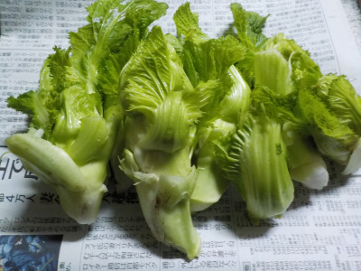
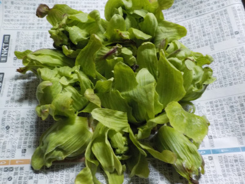
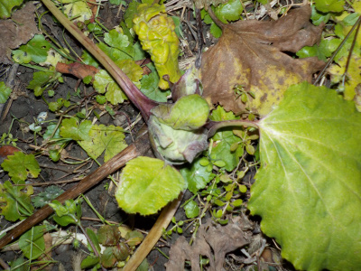

遊びで植物を育てよう
2022/01/30
高菜の芽を収獲

高菜の芽はいつも漬物にして食べていたんですが、茹でてもいいんですね。
ネット検索すると色々な料理方法が出ました。
ネットは役に立つな。
【1月TOP】 【日記TOP】 【園芸TOP】
2022/01/30
フキノトウを収獲

あちこちでフキノトウが出たので収獲しました。
寒いですが小さい虫が沢山飛んでたので、花が咲けば受粉出来るんでしょうね。
【1月TOP】 【日記TOP】 【園芸TOP】
2022/01/10
フキノトウ発見。

もうフキノトウが出てました。
でもこれ一つだけでした。一つだけ採って料理するのは面倒なので、収獲はしませんでした。
【1月TOP】 【日記TOP】 【園芸TOP】
過去の日記
【2021年1月の日記】
【2020年1月の日記】
【2019年1月の日記】
【2018年1月の日記】
【2017年１月の日記】
【2016年1月の日記】
【2015年1月の日記】
【2014年1月の日記】
【2013年1月の日記】
【1月TOP】
【日記TOP】
【園芸TOP】
畑仕事じゃないよ。
【おいしいものを食べよう。】【たくさん寝よう。】
【ソロ活をしよう!】【季節感のあることをしよう。】【動画視聴はほどほどに。】【当サイトの全てのコンテンツは無断転載禁止です。】